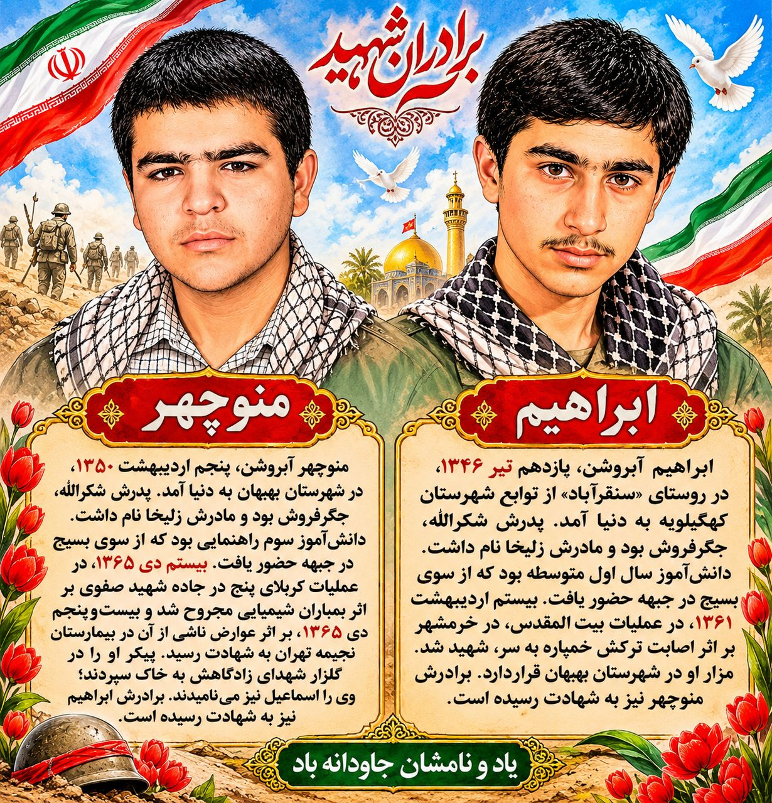

آخرین اخبار و اطلاعیهها
مراسم عزاداری و روضهخوانی در جوار شهدا؛ فاطمیه دوم
به مناسبت ایام فاطمیه دوم، مراسم عزاداری و روضهخوانی با عنوان «در جوار شهدا» به همت هیئت خادمالشهداء بهبهان برگزار میشود.
زمان: چهارشنبه ۲۰ آبان تا جمعه ۲۲ آبان
مکان: گلزار شهدای بهبهان
برگزارکننده: هیئت خادمالشهداء بهبهان
یا فاطمة الزهرا (س)
منبع: اطلاعیه هیئت خادمالشهداء بهبهان
🖤 مساعدت در برپایی خیمه عزای مادر سادات در جوار شهدا
بهمنظور برپایی خیمه عزای حضرت فاطمه زهرا (س) در جوار شهدای والامقام، از عموم ارادتمندان و عاشقان اهلبیت (ع) دعوت میشود در این امر خیر مشارکت نمایند.
به نیت شهید منذور، نذورات خود را به شماره کارت زیر واریز نمایید:
شماره کارت:
6037-7015-7982-5594
به نام: موکب خادمین شهدای بهبهان
تلفن هماهنگی:
09163725209
خادمالشهداء: ایمان احمدیفر
منبع: روابط عمومی کمیته خادمالشهداء شهرستان بهبهان
اخبار و اطلاعیهها
اخبار و اطلاعیههای رسمی کمیته خادمالشهداء در این بخش منتشر خواهد شد.
گزارش برنامهها
گزارش فعالیتها و برنامههای فرهنگی و مذهبی کمیته.
فراخوانها
اطلاعرسانی برنامهها و فراخوانهای فرهنگی و مذهبی.
معرفی شهدای شهرستان بهبهان
معرفی دو برادر شهید
تاریخ انتشار: ۹ آبان ۱۴۰۵

معرفی دو برادر شهید، ابراهیم و منوچهر؛ برگرفته از مطلب منتشرشده در کانال رسمی کمیته خادمالشهداء بهبهان.
یاد و نام شهدا
زندگینامه، خاطرات و وصیتنامه شهدای شهرستان بهبهان.
فرهنگ ایثار و شهادت
آشنایی با ارزشها و آرمانهای شهدا و انتقال آن به نسل جوان.
مناسبتهای مذهبی و ملی
اطلاعرسانی مناسبتهای مذهبی، ملی، ایام سوگواری و برنامههای فرهنگی مرتبط با فعالیتهای کمیته.
گزارش تصویری
تصاویر مراسم و فعالیتها
تصاویر برنامهها، مراسم و فعالیتهای کمیته در این بخش قرار میگیرند.
موقعیت مکانی کمیته خادمالشهداء
برای مشاهده موقعیت مکانی و مسیریابی به محل موردنظر، از نقشه زیر یا دکمه مسیریابی استفاده کنید.
مشاهده موقعیت و مسیریابی با بلد
در صورت نمایش ندادن نقشه در این صفحه، دکمه بالا را انتخاب کنید.
سامانه انتقادات و پیشنهادات
صدای شما برای بهتر شدن فعالیتهای کمیته خادمالشهداء شهرستان بهبهان ارزشمند است. دیدگاهها و پیشنهادهای خود را از طریق فرم زیر با ما در میان بگذارید.
درباره کمیته
کمیته خادمالشهداء شهرستان بهبهان با هدف ترویج فرهنگ ایثار و شهادت، زنده نگه داشتن یاد شهدا و انعکاس فعالیتهای فرهنگی و مذهبی فعالیت میکند.